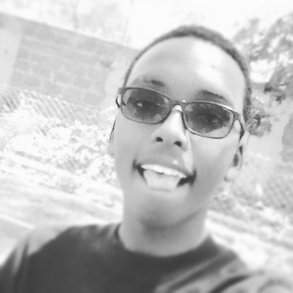

Hi there my name is Leon Carson.
I am a student at Moringa SChool currently studying coding at the prep programme.
For starters lets see how I look
In the past few days I have created a few websites here and there
They include:
Now to know about me a little bit right?
As a kid due to a lot of work transfers of my parents studying in diffferent schools was the experience. But finally I got to do my KCPE at a school named Nyahururu Elite Group of schools located in the township of Nyahururu.
Additionally I did my KCSE exam at Utumishi Academy located in Gilgil.
Due to my young age I actually have a little bit of work experience as a waiter at a local hotel remotely known as Wambuku Hotel in Naivasha
I decided to take a class in programming so as to help me have skills in becoming a fully pledged software engineer.All around my few life years I have been really interested in techknowledge hence on seeing that Moringa School offering the coding classes over a few months I couldnt resistt the offer since it takes a longer time in varsities. The classes also help me relate with people with at least the same interests as mine which I find really helpful since communication skills are key in the techworld so as to make good money.
As a young man am really interested in gaining more techknowledge.Inclusively I am interested in really good literature.
Reading novels ,swimming and listening to music are just but a few of my hobbies.
I also play basketball as a way of pasing time.